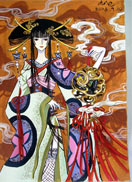
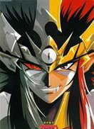
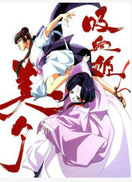
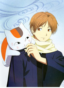
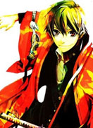
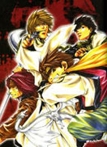

- xxxHOLiC-第1季能够看见鬼怪的高中生四月一日君寻，遇到了“ミセ”的店主壱原侑子。她说“无论什么愿望都可以为你实现”，但是却需要“与之对应的‘代价’”。为了改变能够看见鬼怪的体质，作为“代价”，半强制地被留在店中打工了……
-  鬼神童子役小角是“役咒法堂”千百年前的主人。他使用他那邪恶的守护神“前鬼”打败邪恶之神“羯磨”（カルマ）。小角打败羯磨之后，把前鬼封印起来，直到需要再次用到前鬼的时候。 几个世纪以后，被强烈欲望薰心的一个男人解开了原本被加在羯磨的果实“寄生果”（凭依の実）上的封印。寄生果看起来像是一颗眼球，会附身在被强烈欲望薰心的身上，然后依不同的欲望变成不同的“寄生兽”（凭依獣）。小角的后代役小明，拥有能力让前鬼解除封印，以前鬼的力量消灭寄生兽、解救被寄生果附身的人。前鬼必须再次消灭这些妖怪。
-  吸血姬美夕神魔，是从黑暗世界中逃出的潜伏在人们心灵软弱处将人类引导入死亡的一种东西……而将这样神魔再次赶入黑暗世界的就是一位美丽的吸血鬼——美夕。 故事围绕着吸血鬼美夕与她的一个非常可爱的小宠物死无，以及她的朋友（但是关系暧昧）拉法与神魔间的斗争展开的。基本上是一集打跨一个神魔的单独小故事，但是其中穿插着美夕与一心要打倒她的第一女配角雪女冷羽和最后被神魔控制住的美夕的好朋友千里之间的恩怨作为主线…… 美夕是东方的吸血鬼，奉命守护自己的魔界，与西方习惯意义上的吸血鬼不同，她不是为了伤害人类而存在的恶鬼，而是降妖驱魔的吸血姬。但由于她独特的身份和封印妖魔的方式，再加上人与魔不断的互相纠缠，使得吸血姬美夕成为一个在作品中毁誉参半的主角，她救过很多被妖魔纠缠的人，也将不少和妖魔纠缠甚深的人类送到了冥间……就如同双刃剑一般，无法断言成败得失，但相信很多读者都认同于吸血姬美夕的主要原因在于：美夕每一次将人类送到冥间之时，都可以感受到美夕的无奈和发自她心底的悲伤。
-  夏目友人帐-第1季玲子的孙子夏目贵志从外婆的遗物中得到了那些契约书所做成的“友人帐”，同样他也能看到不会显现在人前的物体。而且也和玲子一样成为了被周围人疏远的一员，被同龄人叫成“骗子”。 可是，作为唯一继承了玲子血统的他却做出了一个重要的决定：将玲子夺过来的妖怪们的名字一一归还。在这样的夏目的身边，开始聚集起各种各样的妖怪们…… 能看到妖怪的少年夏目贵志，与招财猫外表的妖怪猫咪老师一起，为大家讲述一个奇异、悲伤，怀念、令人感动的怪诞故事。片中充溢着细腻而动人的情感，再配上淡雅的音乐，让人在无意间为其喜为其忧，实在是一部好动画！
-  雨月 《雨月》讲述的是高中一年级的冬天，六合鸨时来到次世代博物馆参观了利用最先进技术举办的大江户幕府末巡回展。然而在散步途中，鸨时被突然出现的妖怪鵺袭击，从而进入一个与江户幕末时代相似，人与妖怪共存的名为“雨月”的异世界中。从鵺手中救出了鸨时的少女朽叶，一起参观了幕府末巡回展而来到“雨月”的篠野女绀，鸨时与他们一起探索着回到原来世界的方法。后来，鸨时遇到了站在人类一边的巫女银朱和站在妖怪一边的梵天，并开始逐渐了解到自己的使命。为了回到原来世界而成为破坏“雨月”的人，抑或是为了守护“雨月”而放弃回原来的世界。
-  最游记-第1部 玄奘三藏是河里飘来的弃儿，被金山寺的光明三藏法师抚养长大，也因此受尽了寺中僧侣的岐视。师父遇害使他的心灵受到了巨大打击，也由此养成孤僻叛逆的性格。三藏孤傲不羁，追求自由，不愿受到任何束缚，他想找到绝对的坚强和力量来守护自己重要的东西。他使用的武器是升灵枪，绝技为“魔戒天净”。总是紧跟着三藏的孙悟空是500年前从石头中诞生的奇异生命体，使用与灵活的身手十分相配的如意棒作武器。
-
热门关键词：热血 机战 恐怖 搞笑 神魔 经济 推理 浪漫